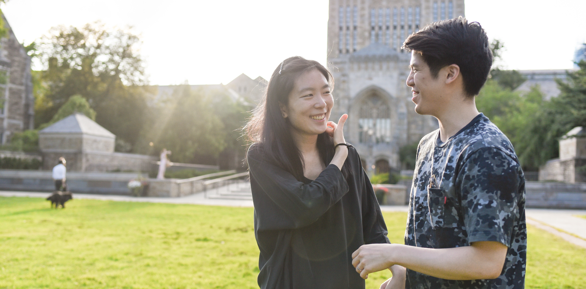

Haven't seen you for a few days and really miss you. This is what I wanted to share with you the evening when you gave the letter:
We had a surprise party for a dad-to-be on Core team at work. He said he was very happy and nervous about becoming a dad. He cut the cake very carefully because he tried to avoid cutting the little shoe candies on the cake. He took so many photos with the wall decorations too. Then I realized that he will probably share this experience with his wife after work. I looked at him and think that one day you will have a dad-to-be party at your office as well. I started to picture how you will share the experience with me when you come back home. Then I noticed I have tears in my eyes, I tried hard to hold them back and didn’t want my colleagues to see me crying.

I know we’ve been through lots of difficult times recently. And because of these difficulties, I got emotional and sensitive, but at the same time I believe after we get through this, we will understand each other deeper. This is the first time we get into a situation this tough and both of us feel the pain. I really want to overcome all of these challenges with you. Life might not be easy, we might face other difficulties, but I want to go through the journey with you. I'm sure we will laugh at these experience when we get old.
You said that we have very different personalities. That's true, but that’s also what I like about you. I think different personalities could help us expand our lives in a way that we've never expected before. And I appreciate all the things you brought into my life. I really enjoyed playing board games with your friends and cousins and I've never expected that before I met you. And I guess you probably didn't expect our day trip to Art Omi would be so fun and unforgettable.
I look forward to creating more memories for us ❤️